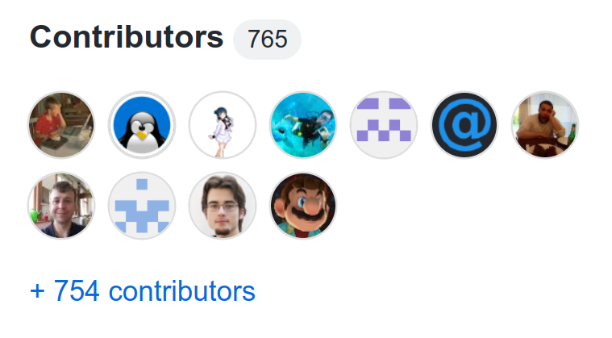
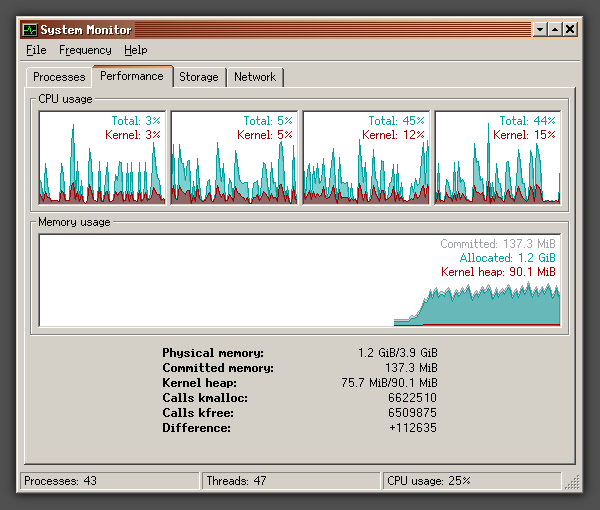
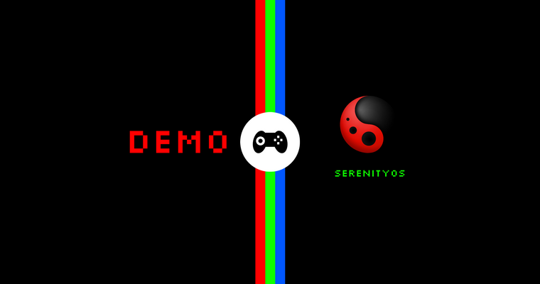
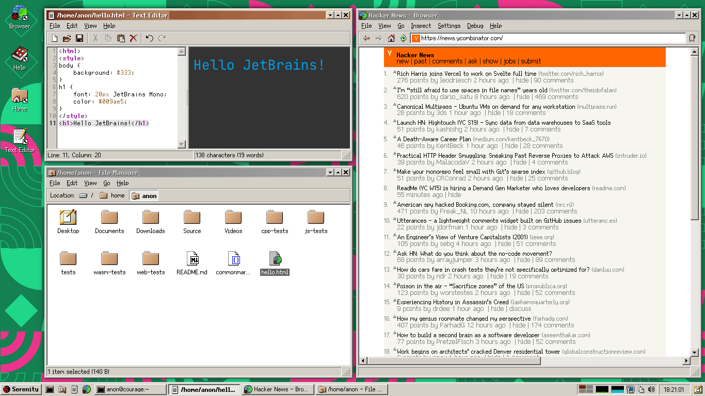
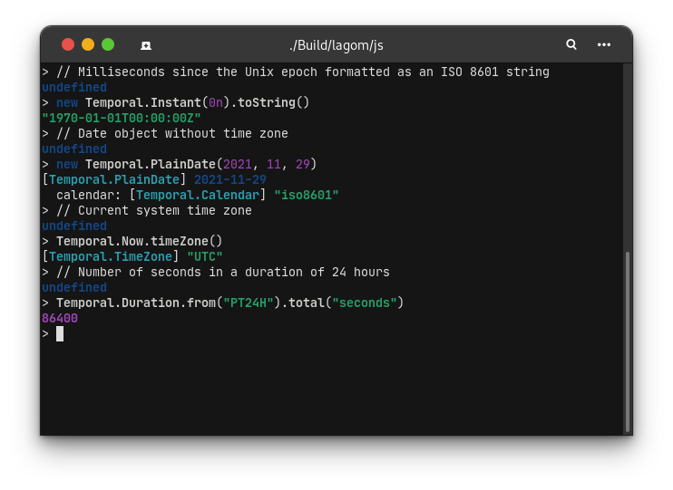
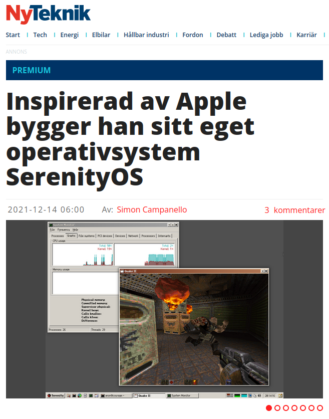
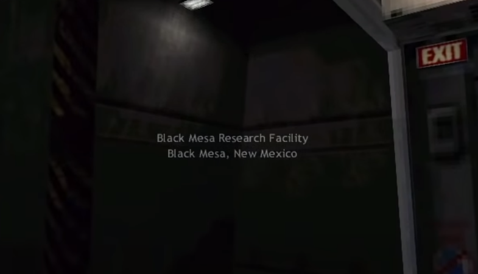
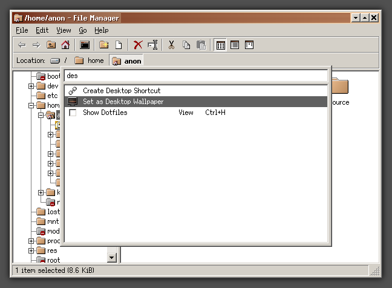
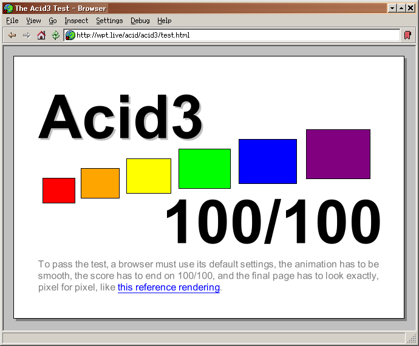
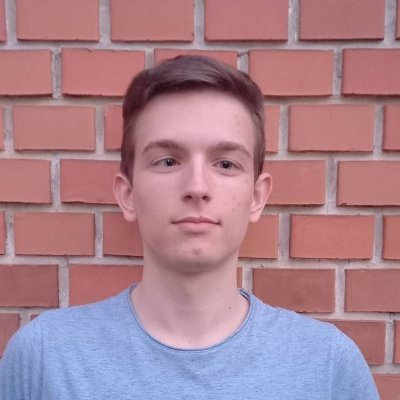

Happy birthday, SerenityOS!
Well hello friends!
Today we celebrate the 4th birthday of SerenityOS,
counting from the
first commit
to the repository, on October 10th, 2018.
What follows is a selection of random highlights from the past year,
mixed with personal reflections from some of the SerenityOS developers.
Previous birthdays:
1st |
2nd |
3rd
Introduction to SerenityOS
SerenityOS is a from-scratch desktop operating system that
combines a Unix-like core with the look&feel of 1990s
productivity software.
The project scope goes all the way from kernel to web browser,
and we aim to build everything in-house instead of relying on
third-party libraries.
My name is
Andreas Kling,
and I started
building this system after finishing a 3-month rehabilitation program for drug
addiction in 2018. I found myself with a lot of time and
nothing to spend it on. So I began building something I'd
always wanted to build: my very own dream OS.
A lot has happened since then, and today SerenityOS is a
bustling open source community with hundreds of developers
from around the world.
The community keeps growing!

In last year's post, we had passed 500 contributors on GitHub.
At the time of writing this one, we're up to 765!
The
SerenityOS Discord server,
which we created in April of last year, has grown even more,
now housing a staggering 6929 members!
We're always welcoming new people into the community,
and it's great to see that our general development model keeps scaling.
Improved multi-core support

While there are still some stability issues, multi-core (SMP)
support in the SerenityOS Kernel has made great strides in the last year.
There's an ongoing effort to rid ourselves of the big process lock,
as well as adopting the SpinlockProtected<T> and
MutexProtected<T> patterns for fool-proof protection
of shared data.
Recently, I've been recording my
monthly update videos
in SMP mode. This definitely wasn't possible a year ago!
Demoing at Handmade Seattle 2021

I was invited to do a demo of SerenityOS for the Handmade Seattle conference.
It was a hybrid conference, and my demo was pre-recorded.
Preparing the demo was surprisingly challenging, as I only had a 5 minute time
slot to work with. I managed to cram in quite a lot in the end, and the demo
was well received!
You can watch the demo on the Handmade Seattle website.
Multi-user desktop

While the SerenityOS kernel and command-line had been multi-user friendly
from the beginning, our GUI wasn't until this year.
With the introduction of a LoginServer service and a redesign
of service sockets, the system can now support per-user desktop sessions.
Reinventing the C++ main() function
In 2021 we began using value-based exceptions (ErrorOr<T>) in SerenityOS.
Together with our TRY() and MUST() macros, it provides a convenient
way to propagate (or terminate on) errors with minimal overhead.
However, the main() function in every program was often quite messy, as it had
nowhere to propagate errors to, and thus wasn't able to use TRY().
The solution came in the form of a new main function: serenity_main(), which
returns an ErrorOr<int>.
Like many things, the initial implementation was
captured on video
on my YouTube channel.
Personal reflections: Jelle Raaijmakers
"In this past year, I've been amazed at the steady growth of SerenityOS
in terms of its community, the quality of the system itself and the
amount of new features and bugfixes coming in. I feel very lucky
experiencing this from a front row seat, and I'm confident that a lot
of people are going to look back at this time with great fondness.
For me personally, it meant transitioning from having very basic C++
experience and no OS development experience whatsoever, into someone
who is still very inexperienced at C++ and OS development but can now
say they have replaced the SB16 audio driver by a brand new AC'97
driver, worked on a lot of ports, fixed all kinds of issues in
userland and the kernel, and had a large contribution to the OpenGL
library and accompanying software rasterizer. For the latter two,
an ad-hoc team consisting of primarily myself, Stephan and Jesse
materialized and I've had great fun discussing all the peculiarities
of OpenGL with them, all in order for specific pixels to obtain
a more pleasant color.
As long as everyone keeps doing what they like, the next year can
only get better :^)"
Andreas & Linus interviewed on the CLion blog

Both of us have been using the CLion IDE from JetBrains for quite a while now,
and the folks at JetBrains were curious to learn more about our project.
Linus and I spoke with them about our use of bleeding-edge C++, CLion, and more.
Read
the interview on The CLion Blog.
Developer interview: Brian Gianforcaro
Speaking of interviews, I did a
video interview
with Brian Gianforcaro,
a long-time SerenityOS developer and project maintainer.
Brian has done a ton of work around the system and is especially interested
in system stability and security.
It's always fun to learn more about the people working on SerenityOS,
and I had a great time chatting with Brian!
Temporal support in LibJS

LibJS was an early implementor of the new
Temporal proposal for ECMAScript.
In fact, we had most of the API up and running before some other engines had even
started working on it. :^)
Linus wrote a nice
blog post about the Temporal implementation in LibJS.
Linus Groh started making YouTube videos
One of my favorite things this year is that Linus Groh made a YouTube channel!
He's been posting videos where he works on various SerenityOS components, including
LibJS, LibWeb, Kernel, our Ports system, and others.
Make sure you #SubscribeToLinus for more SerenityOS related content!
Interviewed by a Swedish newspaper

This year, SerenityOS appeared in the local media in Sweden (where I'm from)
for the first time. I did an
interview with the newspaper Ny Teknik (in Swedish)
where we talked about the project, my background, etc.
This led to a bunch of people contacting my parents to ask about SerenityOS,
which was surreal but pretty funny.
JT makes another review of SerenityOS
Back in 2020, international programming language nerd JT started the
Systems with JT channel on YouTube, and one of the very first videos
was an enthusiastic little review of SerenityOS. This led to us becoming
friends (and eventually creating a programming language together).
Potentially creating a new tradition, JT took
a new look
at SerenityOS for Christmas 2021.
Classic 3D games running on LibGL

In the last year, we've seen a number of classic 3D games for the PC
get ported to SerenityOS. They're running on top of LibGL, which
is our implementation of the OpenGL API. Rendering is done by
LibSoftGPU, a software rasterizer that uses SIMD if available.
It was a great personal highlight to play Half-Life on SerenityOS,
a game I grew up with an put countless hours into as a kid. :^)
Here's an
early recording of the classic intro sequence
when it first got up and running on our OpenGL implementation.
Command palette

While SerenityOS leans heavily on the classic 90s desktop paradigm,
we also like to "backport" good UX inventions from recent years.
One such backport is our new GUI command palette, which exposes
all the available GUI actions in the current context as a keyboard-friendly
command-line interface with fuzzy search.
Thanks to the tight vertical integration with everything using the
same GUI libraries, it's instantly available in all applications on the system.
Community showcase videos
This year, we ran a handful of "community showcases" on my YouTube
channel, where volunteering community members sent in little videos
describing and/or showing something they were working on.
It was super fun to look at SerenityOS development from new perspectives
(and I loved seeing the faces of people I chat with all the time!)
Jakt: a memory-safe language for SerenityOS
In May, we introduced a new systems language to the project.
While C++ has gotten us very far, it doesn't look like it'll
ever get us to memory safety.
To ensure that SerenityOS remains useful and fun to work on
for many years to come, I decided to explore the adoption of
a new systems language for the project. After spending a few
weeks prototyping in a number of languages, I had to admit
that none of them were a great fit for the project.
So instead we're making our own language,
to ensure that we get a perfect fit!
For most projects, this might be a questionable decision.
For us, it's just one more component in a stack where we already
build everything ourselves. :^)
The original Jakt prototype was written in Rust by myself and
JT over a couple of
weeks before we made it public.
I wrote a
post introducing Jakt and the motivations behind it.
And
JT made a video about the creation of Jakt as well.
The Rust-based compiler is now long-gone, and Jakt is fully
self-hosted with the Jakt compiler being written in Jakt itself.
We have yet to introduce Jakt in the SerenityOS codebase,
as we wanted to let the language mature a bit before adding
it as a dependency. Things have been maturing rapidly though,
and it's only a matter of time before this happens.
Personal reflections: Sam Atkins
One highlight for me is seeing new contributors dive into areas
of the project that nobody else was interested in before.
This year, a small handful of people have done a huge amount of
work on adding emoji. We've gone from having only a few of them,
to over 62% coverage according to the
emoji.serenityos.net
website Xexxa set up. It's especially satisfying to see pull
requests featuring emoji that my OS doesn't even support yet. :^)
Similarly with the new Jakt language, a lot of rapid progress
has been made by people who had not written any code for
SerenityOS before.
And of course, I have to mention MacDue's terrific work on
graphical effects in LibWeb. Gradients,
shadows, anti-aliasing,
filters...
It's great to see the web engine maturing and looking more
and more like a "real" web browser. :^)
With all our powers combined, we produce some very impressive
stuff. I can't wait to see what the next year holds!
Garbage-collected DOM in LibWeb
I finally got to implement something I wanted to do in WebKit
for years, but never got around to: a fully garbage-collected DOM
in our web engine.
The LibWeb engine now uses the LibJS garbage collector for more
than just JavaScript objects. Many of the web platform objects have their
lifetime managed by the garbage collector as well.
This makes it much easier to implement some of the more intricate object
models in the HTML specification family (without dealing with reference
cycles and huge graphs with strong/weak pointers left and right.)
Passing some Acid tests

We've now conquered both the
Acid1
and
Acid3
browser tests.
(Acid2
still has a small number of failures.)
These are old tests, but they still cover a lot of things that any
serious browser must support, so it's a no-brainer that we need
to pass them.
Our Acid3 success was covered in
this article on The Register.
Ladybird: a cross-platform web browser
This year, our browser engine stack has taken a major new step:
becoming cross-platform!
Ladybird
started as a humble Linux GUI for debugging LibWeb
and LibJS, but has now become its own cross-platform browser project.
The GUI is still pretty basic, but the underpinnings are maturing.
While things are changing rapidly, we've already seen proofs-of-concept
with the browser running on Linux, macOS, Android, FreeBSD, Haiku and Windows (WSL).
I wrote a
blog post about Ladybird
with some basic details.
You can also watch the
video where I make the initial Qt GUI for Ladybird.
There's also been a number of articles in the German news about Ladybird.
In fact, there was
so
much
coverage
that one commenter insinuated that
I must be the "husband of the boss's daughter" at heise online. :^)
Personal reflections: Dániel Bertalan

I'm very excited about the way the SerenityOS project has been
heading this past year! My favorite aspect is seeing our code
running on many different platforms via Jakt and Ladybird.
These projects have not only proven that our work holds up in
the "real world", but have also brought so many awesome new
members into our community. They also tied in to key
improvements like the wider use of idiomatic C++ platform
abstractions (via the Core::System family of functions).
My fears that the new projects would stop development on the
core OS were unfounded. I'm inspired by how quickly the community's
joint effort achieved large objectives like increasing Unicode and
emoji coverage in our fonts, moving syscalls off of the process lock,
and porting our apps to LibMain. It was great to see so many people
pitching in to help.
This year has been super fruitful, and I can't wait to see what the next one has in store!
Conclusion
Now that I look back on our fourth year, I see that it's been
one of forward-looking decisions and expansions.
It took us a few years to become truly comfortable with the vast
scope and timeline of the SerenityOS project, but now that we have,
two new frontiers can be opened up: a systems language & a cross-platform browser.
Thanks
To all the awesome people who have participated in the last year,
whether by writing code, filing bug reports, adding documentation,
drawing emojis, watching my videos, sending letters,
hanging out on Discord, coming to the livestreams,
telling your friends about SerenityOS, etc, thank you all!
I'm so incredibly grateful for all the love and support this project receives!
And also, a massive thank you! to everyone who has supported me
financially. Thanks to you, I'm able to work on this full time,
and I'm excited to see where we can push this project!
Andreas Kling, 2022-10-10
GitHub |
YouTube |
Twitter |
Patreon |
PayPal |
Ethereum |
Store